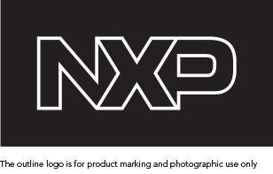

There is a special outline version of the logo for laser marking on chips. This is needed because of the technical infeasibility of printing other logo variants on chips.
Color
The outline logo should always be used in white reversed out of black on all products.
